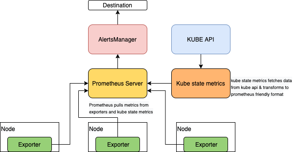

监控¶
Prometheus 是一个 CNCF 毕业项目，它与 Kubernetes 有着原生集成，是目前最流行的监控系统。Prometheus 收集有关容器、Pod、节点和集群的指标。此外，Prometheus 利用 AlertsManager，让您可以编程设置警报，以便在集群出现问题时警告您。Prometheus 将指标数据存储为由指标名称和键/值对标识的时间序列数据。Prometheus 包含一种名为 PromQL 的查询语言，即 Prometheus 查询语言。
下图显示了 Prometheus 指标收集的高级架构：

Prometheus 使用拉取机制，通过导出器从目标抓取指标，并使用 kube state metrics 从 Kubernetes API 抓取指标。这意味着应用程序和服务必须公开包含 Prometheus 格式指标的 HTTP(S) 端点。然后，Prometheus 将根据其配置定期从这些 HTTP(S) 端点拉取指标。
导出器可让您将第三方指标作为 Prometheus 格式指标进行消费。通常在每个节点上部署一个 Prometheus 导出器。有关完整的导出器列表，请参阅 Prometheus 导出器。虽然 node exporter 适合导出 Linux 节点的主机硬件和操作系统指标，但它不适用于 Windows 节点。
在使用稳定的 Prometheus Helm 图表的 混合节点 EKS 集群中包含 Windows 节点时，您将在 Windows 节点上看到失败的 Pod，因为此导出器不适用于 Windows。您需要单独处理 Windows 工作节点池，而是在 Windows 工作节点组上安装 Windows 导出器。
为了为 Windows 节点设置 Prometheus 监控，您需要在 Windows 服务器本身上下载并安装 WMI 导出器，然后在 Prometheus 配置文件的抓取配置中设置目标。 发布页面提供了所有可用的 .msi 安装程序，包括相应的功能集和错误修复。安装程序将把 windows_exporter 设置为 Windows 服务，并在 Windows 防火墙中创建一个例外。如果在不带任何参数的情况下运行安装程序，导出器将使用默认设置运行，包括启用的收集器、端口等。
您可以查看本指南的 调度最佳实践部分，其中建议使用污点/容忍度或 RuntimeClass 来选择性地仅将节点导出器部署到 Linux 节点，而在引导节点时或使用您选择的配置管理工具(例如 chef、Ansible、SSM 等)在 Windows 节点上安装 Windows 导出器。
请注意，与在 Linux 节点上作为 DaemonSet 安装节点导出器不同，在 Windows 节点上，WMI 导出器安装在主机本身上。导出器将导出 CPU 使用率、内存和磁盘 I/O 使用率等指标，还可用于监控 IIS 站点和应用程序、网络接口和服务。
windows_exporter 将默认公开启用的所有收集器的所有指标。这是收集指标的推荐方式，以避免出错。但是，对于高级用途，windows_exporter 可以传递一个可选的收集器列表来过滤指标。Prometheus 配置中的 collect[] 参数可以实现这一点。
Windows 的默认安装步骤包括在引导过程中下载并启动导出器作为服务，并带有参数，例如您要过滤的收集器。
> Powershell Invoke-WebRequest https://github.com/prometheus-community/windows_exporter/releases/download/v0.13.0/windows_exporter-0.13.0-amd64.msi -OutFile <DOWNLOADPATH>
> msiexec /i <DOWNLOADPATH> ENABLED_COLLECTORS="cpu,cs,logical_disk,net,os,system,container,memory"
默认情况下，可以在端口 9182 上的 /metrics 端点抓取指标。 此时，Prometheus 可以通过在 Prometheus 配置中添加以下 scrape_config 来消费指标
scrape_configs:
- job_name: "prometheus"
static_configs:
- targets: ['localhost:9090']
...
- job_name: "wmi_exporter"
scrape_interval: 10s
static_configs:
- targets: ['<windows-node1-ip>:9182', '<windows-node2-ip>:9182', ...]
使用以下命令重新加载 Prometheus 配置
一种更好、更推荐的添加目标的方式是使用一种名为 ServiceMonitor 的自定义资源定义，它是 Prometheus 操作器的一部分，提供了 ServiceMonitor 对象的定义和一个控制器，该控制器将激活我们定义的 ServiceMonitor 并自动构建所需的 Prometheus 配置。
ServiceMonitor 声明性地指定了应该如何监控 Kubernetes 服务组，用于在 Kubernetes 中定义您希望从中抓取指标的应用程序。在 ServiceMonitor 中，我们指定了操作员可以用来识别我们希望监控的 Kubernetes 服务(进而识别 Pod)的 Kubernetes 标签。
为了利用 ServiceMonitor，请创建一个指向特定 Windows 目标的 Endpoint 对象、一个无头服务和一个用于 Windows 节点的 ServiceMontor。
apiVersion: v1
kind: Endpoints
metadata:
labels:
k8s-app: wmiexporter
name: wmiexporter
namespace: kube-system
subsets:
- addresses:
- ip: NODE-ONE-IP
targetRef:
kind: Node
name: NODE-ONE-NAME
- ip: NODE-TWO-IP
targetRef:
kind: Node
name: NODE-TWO-NAME
- ip: NODE-THREE-IP
targetRef:
kind: Node
name: NODE-THREE-NAME
ports:
- name: http-metrics
port: 9182
protocol: TCP
---
apiVersion: v1
kind: Service ##无头服务
metadata:
labels:
k8s-app: wmiexporter
name: wmiexporter
namespace: kube-system
spec:
clusterIP: None
ports:
- name: http-metrics
port: 9182
protocol: TCP
targetPort: 9182
sessionAffinity: None
type: ClusterIP
---
apiVersion: monitoring.coreos.com/v1
kind: ServiceMonitor ##自定义 ServiceMonitor 对象
metadata:
labels:
k8s-app: wmiexporter
name: wmiexporter
namespace: monitoring
spec:
endpoints:
- interval: 30s
port: http-metrics
jobLabel: k8s-app
namespaceSelector:
matchNames:
- kube-system
selector:
matchLabels:
k8s-app: wmiexporter
有关操作员和 ServiceMonitor 的使用的更多详细信息，请查看官方 操作员文档。请注意，Prometheus 支持使用许多 服务发现选项进行动态目标发现。